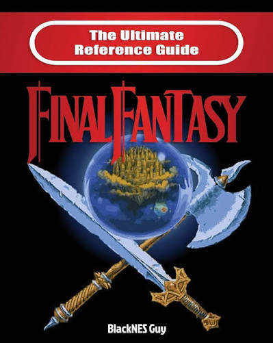

Dudas habituales
Preguntas frecuentes
Algunas respuestas generales para quienes están empezando con los juegos de rol de la saga.
Sobre cómo jugar
En general, no. La mayoría de los títulos numerados cuentan historias y presentan mundos propios. Podés empezar por el que más te llame la atención.
Es una mecánica que aparece en algunas entregas, como Final Fantasy III. Permite asignar roles, por ejemplo guerrero o mago, y cambiar la forma de jugar con cada personaje.
Revisá el equipo, los objetos de curación y las habilidades disponibles. También puede servir guardar la partida antes del combate y observar qué ataques utiliza el jefe.
Son actividades que no siempre hacen falta para terminar la historia principal. Pueden ofrecer objetos, desafíos o conocer mejor algunos personajes y lugares.
